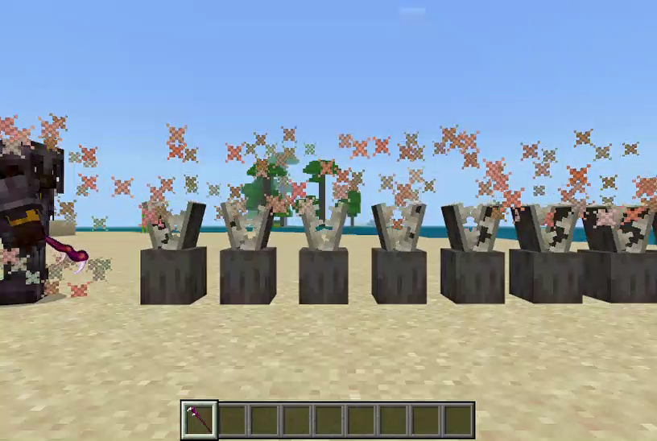
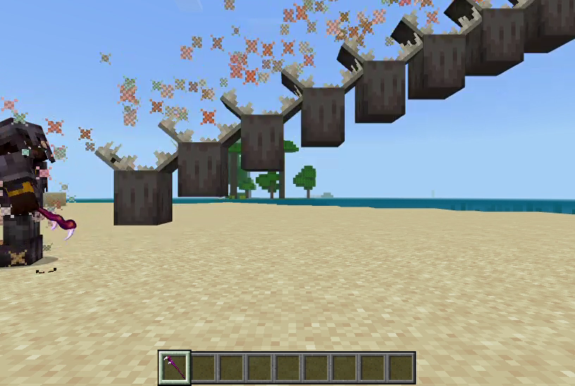
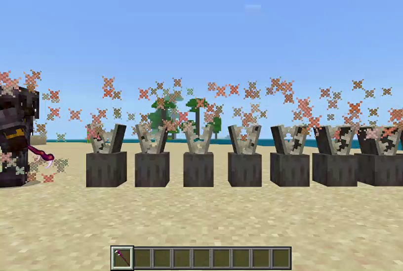
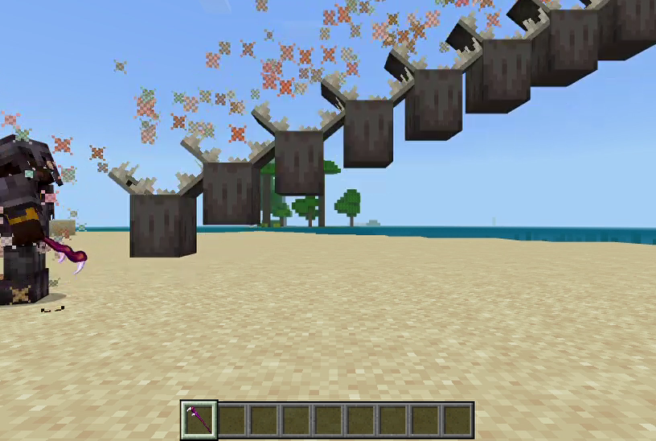
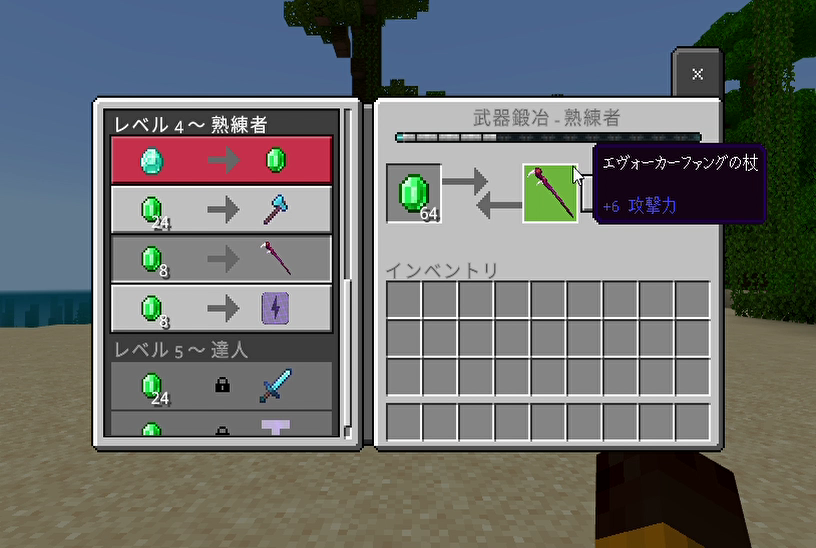
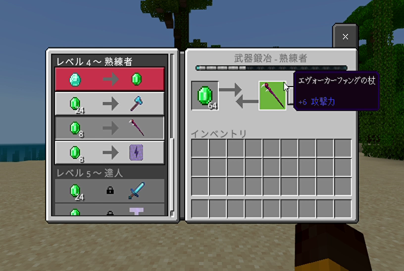

【エヴォーカーファングの杖】
使い方
このアイテムをメインハンドに装備した状態で使うと、プレイヤーが向いている方向へエヴォーカーファングを召喚します。

上を向いて使う事で対空戦も可能です。

しゃがんだ状態で使うと護りの隊列になります。
護りの隊列ではプレイヤーを中心として放射状にノックバックがかかるようにしているので、以下のように範囲内へ侵入した相手を遠ざけながらダメージを与える事ができます。

上を向いて使う事で対空戦も可能です。

しゃがんだ状態で使うと護りの隊列になります。
護りの隊列ではプレイヤーを中心として放射状にノックバックがかかるようにしているので、以下のように範囲内へ侵入した相手を遠ざけながらダメージを与える事ができます。
「エヴォーカーファングの杖」取得
本環境のビヘイビアパック／リソースパックを含めたアドオンパックを適用しておけば、以下の方法で「エヴォーカーファングの杖」が手に入ります。

▶ネットショップ
取引で取得する場合
武器鍛冶師の村人との取引で手に入ります。
ショップで購入する場合
以下のショップで購入できます。▶ネットショップ
コマンドで取得する場合
以下はワールドオーナーやシステム組み込み用としてコマンドで取得する方法です。おわりに
今回は▶発射アイテムとしてのエヴォーカーファングの杖を実装後、▶ダミーエンティティを作成して▶発射体エンティティとして発射する事でイベント検知を行っています。
また、▶召雷の魔石実装時と同じようにWebsocketサーバーを介したネットショップとの接続中は発動できないようにしています。
また、▶召雷の魔石実装時と同じようにWebsocketサーバーを介したネットショップとの接続中は発動できないようにしています。